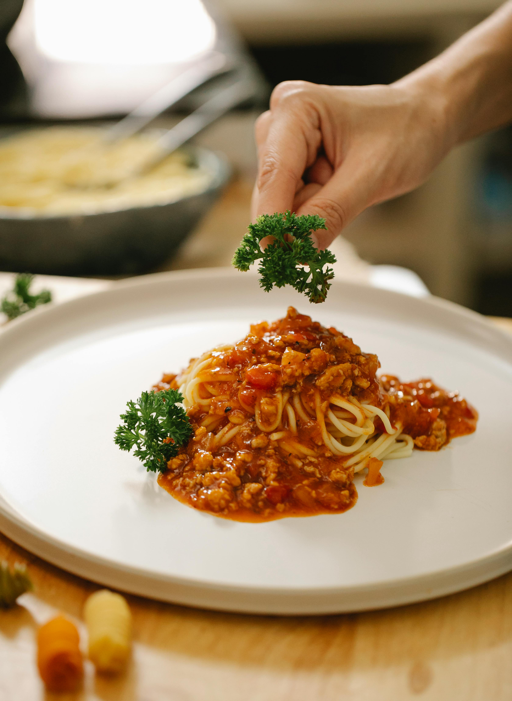

Home
Spaghetti Bolognese

Description:
A classic Italian pasta dish with a rich and hearty meat sauce.
Ingredients:
- 200g spaghetti
- 2 tbsp olive oil
- 1 onion, finely chopped
- 2 cloves garlic, minced
- 250g ground beef
- 400g canned tomatoes
- 2 tbsp tomato paste
- 1 tsp dried oregano
- 1 tsp dried basil
- Salt and pepper to taste
- Grated Parmesan cheese (for serving)
Instructions:
- Cook the spaghetti according to package instructions. Drain and set aside.
- Heat olive oil in a pan over medium heat. Add chopped onions and garlic, and sauté until soft.
- Add ground beef and cook until browned.
- Stir in canned tomatoes, tomato paste, oregano, and basil. Simmer for 15-20 minutes.
- Season with salt and pepper to taste.
- Serve the sauce over the cooked spaghetti and top with grated Parmesan cheese.